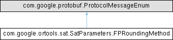

|
Google OR-Tools v9.14
a fast and portable software suite for combinatorial optimization
|
|
Google OR-Tools v9.14
a fast and portable software suite for combinatorial optimization
|
Rounding method to use for feasibility pump.
Protobuf enum operations_research.sat.SatParameters.FPRoundingMethod
Definition at line 1928 of file SatParameters.java.

Public Member Functions | |
| final int | getNumber () |
| final com.google.protobuf.Descriptors.EnumValueDescriptor | getValueDescriptor () |
| final com.google.protobuf.Descriptors.EnumDescriptor | getDescriptorForType () |
Static Public Member Functions | |
| [static initializer] | |
| static FPRoundingMethod | valueOf (int value) |
| static FPRoundingMethod | forNumber (int value) |
| static com.google.protobuf.Internal.EnumLiteMap< FPRoundingMethod > | internalGetValueMap () |
| static com.google.protobuf.Descriptors.EnumDescriptor | getDescriptor () |
| static FPRoundingMethod | valueOf (com.google.protobuf.Descriptors.EnumValueDescriptor desc) |
Public Attributes | |
| NEAREST_INTEGER =(0) | |
| LOCK_BASED =(1) | |
| ACTIVE_LOCK_BASED =(3) | |
| PROPAGATION_ASSISTED =(2) | |
Static Public Attributes | |
| static final int | NEAREST_INTEGER_VALUE = 0 |
| static final int | LOCK_BASED_VALUE = 1 |
| static final int | ACTIVE_LOCK_BASED_VALUE = 3 |
| static final int | PROPAGATION_ASSISTED_VALUE = 2 |
|
static |
|
static |
| value | The numeric wire value of the corresponding enum entry. |
Definition at line 2041 of file SatParameters.java.
|
static |
Definition at line 2072 of file SatParameters.java.
| final com.google.protobuf.Descriptors.EnumDescriptor com.google.ortools.sat.SatParameters.FPRoundingMethod.getDescriptorForType | ( | ) |
Definition at line 2068 of file SatParameters.java.
| final int com.google.ortools.sat.SatParameters.FPRoundingMethod.getNumber | ( | ) |
Definition at line 2023 of file SatParameters.java.
| final com.google.protobuf.Descriptors.EnumValueDescriptor com.google.ortools.sat.SatParameters.FPRoundingMethod.getValueDescriptor | ( | ) |
Definition at line 2064 of file SatParameters.java.
|
static |
Definition at line 2052 of file SatParameters.java.
|
static |
Definition at line 2078 of file SatParameters.java.
|
static |
| value | The numeric wire value of the corresponding enum entry. |
forNumber(int) instead. Definition at line 2033 of file SatParameters.java.
| com.google.ortools.sat.SatParameters.FPRoundingMethod.ACTIVE_LOCK_BASED =(3) |
Similar to lock based rounding except this only considers locks of active constraints from the last lp solve.
ACTIVE_LOCK_BASED = 3;
Definition at line 1956 of file SatParameters.java.
|
static |
Similar to lock based rounding except this only considers locks of active constraints from the last lp solve.
ACTIVE_LOCK_BASED = 3;
Definition at line 2007 of file SatParameters.java.
| com.google.ortools.sat.SatParameters.FPRoundingMethod.LOCK_BASED =(1) |
Counts the number of linear constraints restricting the variable in the increasing values (up locks) and decreasing values (down locks). Rounds the variable in the direction of lesser locks.
LOCK_BASED = 1;
Definition at line 1947 of file SatParameters.java.
|
static |
Counts the number of linear constraints restricting the variable in the increasing values (up locks) and decreasing values (down locks). Rounds the variable in the direction of lesser locks.
LOCK_BASED = 1;
Definition at line 1998 of file SatParameters.java.
| com.google.ortools.sat.SatParameters.FPRoundingMethod.NEAREST_INTEGER =(0) |
Rounds to the nearest integer value.
NEAREST_INTEGER = 0;
Definition at line 1937 of file SatParameters.java.
|
static |
Rounds to the nearest integer value.
NEAREST_INTEGER = 0;
Definition at line 1988 of file SatParameters.java.
| com.google.ortools.sat.SatParameters.FPRoundingMethod.PROPAGATION_ASSISTED =(2) |
This is expensive rounding algorithm. We round variables one by one and propagate the bounds in between. If none of the rounded values fall in the continuous domain specified by lower and upper bound, we use the current lower/upper bound (whichever one is closest) instead of rounding the fractional lp solution value. If both the rounded values are in the domain, we round to nearest integer.
PROPAGATION_ASSISTED = 2;
Definition at line 1969 of file SatParameters.java.
|
static |
This is expensive rounding algorithm. We round variables one by one and propagate the bounds in between. If none of the rounded values fall in the continuous domain specified by lower and upper bound, we use the current lower/upper bound (whichever one is closest) instead of rounding the fractional lp solution value. If both the rounded values are in the domain, we round to nearest integer.
PROPAGATION_ASSISTED = 2;
Definition at line 2020 of file SatParameters.java.